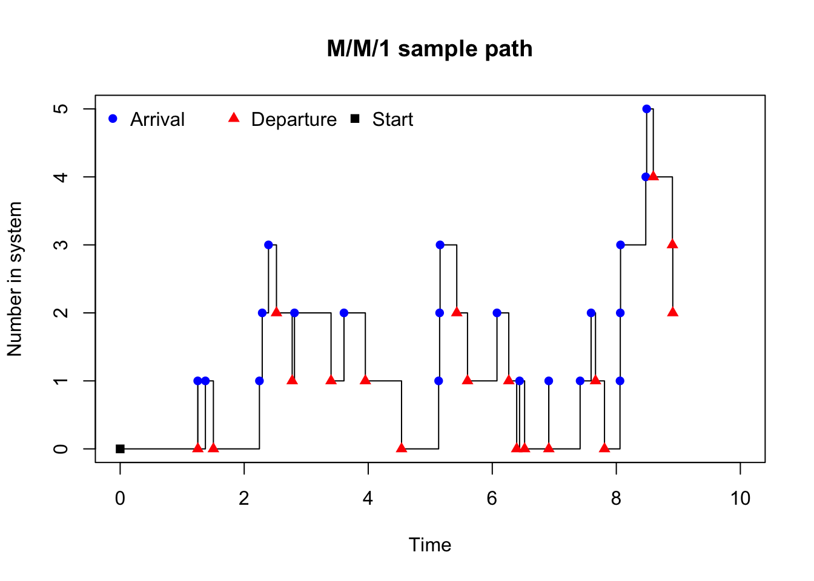
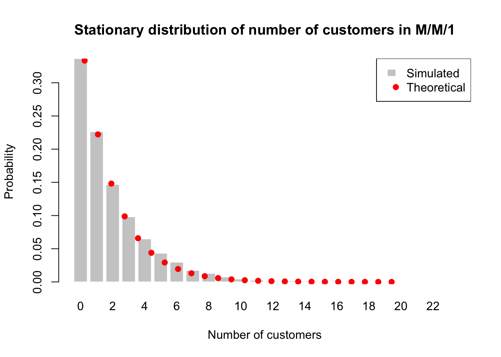

graph LR
A(Arrival) -->|Waiting| B(Service)
B -->|Departure| C((...))
style C fill:#FFFFFF00, stroke:#FFFFFF00, color:#FFFFFF00;
30 Markov Process
A Markov process is a type of stochastic process that has the Markov property, which states that the future state of the process depends only on the current state and not on the past states. Intuitively, once we know the current state of the system, earlier states do not provide any additional information for predicting what happens next. This property greatly simplifies both modelling and simulation.
Formally, a stochastic process \(\{X_t\}\) is a Markov process if it satisfies the Markov property:
\[ P(X_{t+1} | X_t, X_{t-1}, ..., X_0) = P(X_{t+1} | X_t) \quad \forall t. \]
This does not mean that the process is independent over time. Rather, the dependence is fully summarised by the current state.
Markov processes can be defined in either time setting: discrete or continuous. The discrete‑time case is often referred to as a Markov chain. The key feature in both cases is the same:
given the present, the future is independent of the past.
Many of the stochastic processes introduced earlier in this lecture are Markov processes:
| Process | Time | State Space |
|---|---|---|
| Bernoulli process | Discrete | \(\{0,1\}\) |
| Random walk | Discrete | \(\mathbb{Z}\) |
| Wiener process | Continuous | \(\mathbb{R}\) |
| Poisson process | Continuous | \(\{0,1,2,\dots\}\) |
This illustrates that the Markov property is not tied to a specific model, but rather describes a dependence structure shared by many different stochastic processes.
Why Markov Processes Matter in Simulation
Easy to simulate
Simulation proceeds step‑by‑step using a simple recursion: \[ X_{t+1} \sim P(\cdot \mid X_t). \]Natural system representation
Many real‑world systems evolve based on their current configuration:- queue length
- inventory level
- system status (working / failed)
- current price or position
Foundation for advanced simulation methods
Markov processes underpin:- random walks
- queueing models
- discrete‑event simulation
- Markov Chain Monte Carlo (MCMC)
Because only the current state is required, Markov models are particularly well suited for long‑run simulation and performance analysis.
Queueing theory
Queueing theory studies systems in which entities (customers, jobs, packets) arrive, wait for service if necessary, receive service from one or more servers, and then depart. Examples include customers in a shop, tasks on a CPU, or calls arriving at a help desk. Queueing systems are among the most important and widely studied applications of Markov processes, and they also provide a natural entry point to discrete‑event simulation.
A queueing system evolves through a sequence of events, such as an arrival to the system, the start of service, a service completion, or a departure from the system. Between these events, the state of the system \(X_t\) (the number of customers in the system at time \(t\)) remains unchanged.
The Markov property holds because the future evolution of the system depends only on the current state (e.g., how many customers are currently in the system) and not on how the system arrived at that state. For example, if there are currently 3 customers in the system, the probability of an arrival or departure in the next time step depends only on that number, regardless of whether those customers arrived one at a time or all at once.
A modelling framework for queueing systems typically involves specifying:
- Arrival process: How customers arrive (e.g., Poisson, deterministic).
- Service process: How customers are served (e.g., exponential, deterministic).
- Number of servers: How many servers are available (e.g., single, multiple).
- Queue discipline: How customers are prioritised (e.g., first‑come‑first‑served, priority).
Kendall’s notation
In queueing theory, we often use the Kendall notation to classify different types of queueing models. Initially introduced by David Kendall, this notation provides a concise way to describe the key characteristics of a queueing system. The general format is:
\[ A/S/c, \]
where \(A\) describes the arrival process, \(S\) describes the service process, and \(c\) is the number of servers. Each of these components can take on specific values that indicate the nature of the process. For example, an M/M/1 queue has Markovian arrivals (M), Markovian service times (M), and a single server (1).
It has since been extended to
\[ A/S/c/K/N/D, \]
where \(K\) is the system capacity (maximum number of customers allowed in the system), \(N\) is the population size (total number of potential customers), and \(D\) is the queue discipline. However, the original \(A/S/c\) format remains widely used for its simplicity and clarity. The extended notation allows for more detailed descriptions of complex systems, but the core idea of classifying queueing models based on their arrival process, service process, and number of servers is still central to understanding and simulating these systems.
The following table summarises some common values for \(A\) and \(S\) in Kendall’s notation:
| Symbol | Description |
|---|---|
| M | Markovian (exponential inter-arrival or service times) |
| D | Deterministic (fixed inter-arrival or service times) |
| G | General (arbitrary distribution for inter-arrival or service times) |
For this course, we will focus on the M/M/1 and M/M/\(c\) queueing models, which are among the most fundamental and widely studied in queueing theory. These models provide a solid foundation for understanding more complex systems and are particularly amenable to simulation due to their Markovian properties.
The M/M/1 queue
One of the simplest and most widely used queueing models is the M/M/1 queue. The “M” stands for Markovian, indicating that both the inter-arrival times and service times satisfy the Markov property, and “1” indicates a single server. Despite its simplicity, it captures key features of many real‑world systems and serves as a building block for more complex models.
The M/M/1 queue is a continuous‑time Markov process whose state space is the set of non-negative integers \(\{0, 1, 2, \ldots\}\) where the value corresponds to the number of customers in the system. The process is characterised by the following assumptions:
- arrivals follow a Poisson process with rate \(\lambda\),
- service times are exponentially distributed with rate \(\mu\),
- All arrivals and service times are (usually) independent of each other.
- A single server provides service to customers one at a time on a first‑come‑first‑served basis.
- the queue has infinite capacity and no customer is turned away.
The state space and transition structure of the M/M/1 queue can be visualised as follows:
graph LR
A((0)) -->|"$$\lambda$$"| B((1))
B -->|"$$\lambda$$"| C((2))
C --> D(("$$\cdots$$"))
D -->|"$$\lambda$$"| E(("$$k$$"))
E -->|"$$\lambda$$"| F(("$$\cdots$$"))
F -->|"$$\mu$$"| E
E -->|"$$\mu$$"| D
D --> C
C -->|"$$\mu$$"| B
B -->|"$$\mu$$"| A
style D fill:#FFFFFF00, stroke:#FFFFFF00;
style F fill:#FFFFFF00, stroke:#FFFFFF00;
Stability and utilisation
The model is considered stable if the arrival rate is less than the service rate (\(\lambda < \mu\)). In this case, the system will not grow indefinitely and will reach a steady state distribution over time. Therefore, we define the utilisation ratio or the average fraction of time the server is busy as
\[ \rho = \frac{\lambda}{\mu}. \]
ImportantStationary distribution
For stability, we require \(\rho < 1\).
When \(\rho < 1\), the M/M/1 queue has a stationary distribution for the number of customers in the system, which is given by:
\[ \pi_n = (1-\rho) \rho^n, \quad n = 0, 1, 2, \ldots \]
This is exactly the geometric distribution with parameter \(1-\rho\).
We can also interpret utilisation ratio as follows:
| Utilisation ratio \(\rho\) | System behaviour | Recommendation |
|---|---|---|
| \(\rho < 0.6\) | Underutilised | Consider reducing capacity or increasing demand |
| \(0.6 \le \rho < 0.8\) | Efficient | System is well balanced |
| \(0.8 \le \rho < 1\) | High utilisation | Monitor closely for potential congestion |
| \(\rho \ge 1\) | Unstable | Increase capacity or reduce demand; otherwise, queue will grow indefinitely |
Little’s Law
Little’s Law is a fundamental result in queueing theory that relates the average number of customers in a system (\(L\)), the average arrival rate (\(\lambda\)), and the average time a customer spends in the system (\(W\)).
It states that:
\[ L = \lambda W \]
This means that the average number of customers in the stationary system is equal to the average arrival rate multiplied by the average time each customer spends in the system.
Erlang-C formula
The Erlang-C formula gives the probability that an arriving customer will have to wait for service in an M/M/\(c\) queue. It is derived from the steady‑state probabilities of the number of customers in the system and captures the likelihood that the server is busy upon arrival.
The formula is:
\[ P(\text{wait}) = \frac{\displaystyle \frac{(\lambda/\mu)^c}{c!}\,\frac{1}{1-\rho} }{ \displaystyle \sum_{n=0}^{c-1} \frac{(\lambda/\mu)^n}{n!} + \frac{(\lambda/\mu)^c}{c!}\,\frac{1}{1-\rho} }, \]
For M/M/1, this simplifies to:
\[ P(\text{wait}) = \rho. \]
Performance measures
There are several key performance measures of interest in the M/M/1 queue, which can be estimated from simulation data and compared to their theoretical values:
Utilisation ratio \(\rho\): The proportion of time the server is busy can be estimated from the simulation as \[ \hat{\rho} = \frac{\sum_{i=1}^{n} \mathbf{1}(X_{t_i} > 0) (t_{i+1} - t_i)}{\sum_{i=1}^{n} (t_{i+1} - t_i)}, \] and theoretically, it should equal \(\rho\). Here, \(\mathbf{1}(X_{t_i} > 0)\) is an indicator function that equals 1 when the server is busy (i.e., at least one customer in the system) and 0 otherwise.
Average number of customers in the system \(L\)
- Empirically, we can compute the time‑weighted average number of customers in the system from the simulation data: \[ \hat{L} = \frac{\sum_{i=1}^{n} X_{t_i} (t_{i+1} - t_i)}{\sum_{i=1}^{n} (t_{i+1} - t_i)}, \] where \(X_{t_i}\) is the number of customers in the system during the interval \([t_i, t_{i+1})\).
- Theoretically, the number of customers in the system is geometrically distributed with parameter \(1-\rho\) in the long run, so the average is \[ L = \frac{\rho}{1-\rho}. \]
Average number of customers in the queue \(L_q\): The average number of customers waiting in the queue (excluding the one in service) can be estimated as \[ \hat{L}_q = \hat{L} - \rho, \] and the theoretical value is \[ L_q = \frac{\rho^2}{1-\rho}. \]
Response/System time \(W\): The average time a customer spends in the system (waiting + service) can be estimated via Little’s Law: \[ \hat{W} = \frac{\hat{L}}{\lambda}. \] The theoretical value is \[ W = \frac{1}{\mu - \lambda}. \]
Waiting time \(W_q\): The average time a customer spends waiting in the queue (excluding service) can be estimated as \[ \hat{W}_q = \hat{W} - \frac{1}{\mu}, \] and the theoretical value is \[ W_q = \frac{\rho}{\mu - \lambda}. \]
System empty probability \(P_0\): The proportion of time the system is empty can be estimated as \[ \hat{P}(X=0) = \frac{\sum_{i=1}^{n} \mathbf{1}(X_{t_i} = 0) (t_{i+1} - t_i)}{\sum_{i=1}^{n} (t_{i+1} - t_i)}, \] and theoretically, it should equal \(1-\rho\).
Simulation algorithm
Let \(\lambda\) be the arrival rate and \(\mu\) the service rate. Use i.i.d. exponential interarrival and service times.
- Initialisation
- Set:
\(t \leftarrow 0\) (simulation clock)
\(X \leftarrow X_0\) (e.g. \(X_0 = 0\))
- Schedule first arrival:
\(T_a \leftarrow t + A_1\), where \(A_1 \sim \text{Exp}(\lambda)\).
- Initial service event:
If \(X > 0\), set \(T_s \leftarrow t + S_1\) with \(S_1 \sim \text{Exp}(\mu)\);
else set \(T_s \leftarrow \infty\).
- Set:
- Event loop (repeat until \(t\) exceeds the desired horizon \(T_{\max}\))
- Determine next event time
- \(T \leftarrow \min(T_a, T_s)\).
- If \(T > T_{\max}\), stop.
- Advance clock: \(t \leftarrow T\).
- If next event is an arrival (\(T = T_a\)):
- Update state: \(X \leftarrow X + 1\).
- Schedule next arrival:
Draw \(A \sim \text{Exp}(\lambda)\), set \(T_a \leftarrow t + A\). - If server was idle just before this arrival (i.e. \(X\) was 0 before increment, now \(X = 1\)):
Draw \(S \sim \text{Exp}(\mu)\), set \(T_s \leftarrow t + S\).
- If next event is a departure (\(T = T_s\)):
- Update state: \(X \leftarrow X - 1\).
- If system still nonempty (\(X > 0\)):
Draw \(S \sim \text{Exp}(\mu)\), set \(T_s \leftarrow t + S\). - If system becomes empty (\(X = 0\)):
Set \(T_s \leftarrow \infty\).
- Determine next event time
- Data collection
- At each event (or between events using time‑weighted averages), record quantities of interest.
Tip
For a complex algorithm like this, it is often helpful to write out the logic in pseudocode or a flowchart before implementing it in code. This helps ensure that all cases are handled correctly and that the simulation will run as intended.
M/M/1 simulation pseudocode:
INITIALISE:
t ← 0
X ← X0
schedule next arrival: Ta ← t + Exp(λ)
if X > 0:
Ts ← t + Exp(μ)
else:
Ts ← ∞
WHILE t < Tmax:
T ← min(Ta, Ts)
t ← T
IF T = Ta: # Arrival event
X ← X + 1
Ta ← t + Exp(λ) # schedule next arrival
if X = 1: # server was idle
Ts ← t + Exp(μ)
ELSE: # Departure event
X ← X - 1
if X > 0:
Ts ← t + Exp(μ)
else:
Ts ← ∞
Example: Simulate an M/M/1 queue with the following parameters:
- initial state (number of customers) \(X_0 = 0\).
- arrival rate \(\lambda = 2\)
- service rate \(\mu = 3\)
- a total simulation time of 10 units.
simulate_mm1 <- function(lambda = 2, mu = 3,
sim_time = 10, seed = 1234) {
if (!is.null(seed)) set.seed(seed)
X <- 0
T <- 0
time_vec <- c(0)
state_vec <- c(0)
event_vec <- c("Start")
# Schedule first arrival
T_a <- rexp(1, rate = lambda)
T_s <- Inf # no service when system is empty
while (T < sim_time) {
if (min(T_a, T_s) > sim_time) break
if (T_a < T_s) { # Arrival event
T <- T_a
X <- X + 1
event <- "Arrival"
# Schedule next arrival
T_a <- T + rexp(1, rate = lambda)
# If server was idle, start service
if (X == 1) {
T_s <- T + rexp(1, rate = mu)
}
} else { # Departure event
T <- T_s
X <- X - 1
event <- "Departure"
# If there are still customers, schedule next departure
if (X > 0) {
T_s <- T + rexp(1, rate = mu)
} else {
T_s <- Inf
}
}
time_vec <- c(time_vec, T)
state_vec <- c(state_vec, X)
event_vec <- c(event_vec, event)
}
data.frame(
time = round(time_vec, 4),
state = state_vec,
event = event_vec
)
}
df <- simulate_mm1(lambda = 2, mu = 3, sim_time = 10, seed = 1234)
df time state event
1 0.0000 0 Start
2 1.2509 1 Arrival
3 1.2531 0 Departure
4 1.3743 1 Arrival
5 1.5033 0 Departure
6 2.2456 1 Arrival
7 2.2906 2 Arrival
8 2.3919 3 Arrival
9 2.5203 2 Departure
10 2.7738 1 Departure
11 2.8109 2 Arrival
12 3.4005 1 Departure
13 3.6090 2 Arrival
14 3.9534 1 Departure
15 4.5369 0 Departure
16 5.1352 1 Arrival
17 5.1511 2 Arrival
18 5.1584 3 Arrival
19 5.4275 2 Departure
20 5.6007 1 Departure
21 6.0759 2 Arrival
22 6.2661 1 Departure
23 6.3939 0 Departure
24 6.4401 1 Arrival
25 6.5213 0 Departure
26 6.9103 1 Arrival
27 6.9117 0 Departure
28 7.4164 1 Arrival
29 7.5935 2 Arrival
30 7.6645 1 Departure
31 7.8094 0 Departure
32 8.0595 1 Arrival
33 8.0640 2 Arrival
34 8.0680 3 Arrival
35 8.4751 4 Arrival
36 8.4896 5 Arrival
37 8.5963 4 Departure
38 8.9048 3 Departure
39 8.9105 2 DeparturePython version
import numpy as np
import pandas as pd
def simulate_mm1(lambda_=2, mu=3, sim_time=10, seed=1234):
if seed is not None:
np.random.seed(seed)
X = 0.0 # system state (number of customers)
T = 0.0 # current time
time_vec = [0.0]
state_vec = [0]
event_vec = ["Start"]
# Schedule first arrival
T_a = np.random.exponential(scale=1 / lambda_)
T_s = np.inf # no service when system is empty
while T < sim_time:
if min(T_a, T_s) > sim_time:
break
if T_a < T_s:
# Arrival event
T = T_a
X += 1
event = "Arrival"
# Schedule next arrival
T_a = T + np.random.exponential(scale=1 / lambda_)
# If server was idle, start service
if X == 1:
T_s = T + np.random.exponential(scale=1 / mu)
else:
# Departure event
T = T_s
X -= 1
event = "Departure"
# Schedule next departure
if X > 0:
T_s = T + np.random.exponential(scale=1 / mu)
else:
T_s = np.inf
time_vec.append(T)
state_vec.append(int(X))
event_vec.append(event)
return pd.DataFrame({
"time": np.round(time_vec, 4),
"state": state_vec,
"event": event_vec
})
df = simulate_mm1(lambda_=2, mu=3, sim_time=10, seed=1234)
print(df)The resulting data frame df contains the time of each event, the state of the system after the event, and the type of event that occurred (arrival or departure). We can visualise the sample path of the M/M/1 queue over time to see how the number of customers in the system evolves.
plot(
df$time, df$state,
type = "s",
xlim = c(0, 10),
xlab = "Time",
ylab = "Number in system",
main = "M/M/1 sample path"
)
points(df$time, df$state,
pch = ifelse(df$event == "Arrival", 16, ifelse(df$event == "Departure", 17, 15)),
col = ifelse(df$event == "Arrival", "blue", ifelse(df$event == "Departure", "red", "black")))
legend(
"topleft", ncol = 3, bty = "n",
legend = c("Arrival", "Departure", "Start"),
pch = c(16, 17, 15),
col = c("blue", "red", "black"))
Python version
import matplotlib.pyplot as plt
import numpy as np
# Step plot of the queue length process
plt.figure(figsize=(7, 4))
plt.step(
df["time"],
df["state"],
where="post",
label=None
)
plt.xlim(-0.1, 10.1)
plt.xlabel("Time")
plt.ylabel("Number in system")
plt.title("M/M/1 sample path")
# Plot event markers
arrival_mask = df["event"] == "Arrival"
departure_mask = df["event"] == "Departure"
start_mask = df["event"] == "Start"
plt.scatter(
df.loc[arrival_mask, "time"],
df.loc[arrival_mask, "state"],
marker="o",
color="blue",
label="Arrival"
)
plt.scatter(
df.loc[departure_mask, "time"],
df.loc[departure_mask, "state"],
marker="^",
color="red",
label="Departure"
)
plt.scatter(
df.loc[start_mask, "time"],
df.loc[start_mask, "state"],
marker="s",
color="black",
label="Start"
)
# Legend
plt.legend(
loc="upper left",
ncol=3,
frameon=False
)
plt.tight_layout()
plt.show()lambda <- 2
mu <- 3
rho <- lambda / mu
# simulate for a longer time to get more accurate estimates of performance metrics
df <- simulate_mm1(lambda = lambda, mu = mu, sim_time = 10000, seed = 1234)
# durations spent in each state
durations <- diff(df$time) # time spent in each interval
states <- df$state[-nrow(df)] # state held over each interval
# Theoretical performance metrics
rho <- lambda / mu
L_theory <- rho / (1 - rho)
Lq_theory <- rho^2 / (1 - rho)
W_theory <- 1 / (mu - lambda)
Wq_theory <- rho / (mu - lambda)
P0_theory <- 1 - rho
# Empirical performance metrics
rho_hat <- sum((states > 0) * durations) / sum(durations)
L_hat <- sum(states * durations) / sum(durations)
Lq_hat <- L_hat - rho_hat
W_hat <- L_hat / lambda
Wq_hat <- W_hat - 1 / mu
P0_hat <- sum((states == 0) * durations) / sum(durations)
data.frame(
Metric = c("Utilisation", "Avg. number in system", "Avg. number in queue",
"Avg. response time", "Avg. waiting time", "System empty probability"),
Simulated = c(rho_hat, L_hat, Lq_hat, W_hat, Wq_hat, P0_hat),
Theoretical = c(rho, L_theory, Lq_theory, W_theory, Wq_theory, P0_theory)
) Metric Simulated Theoretical
1 Utilisation 0.6635262 0.6666667
2 Avg. number in system 1.9706788 2.0000000
3 Avg. number in queue 1.3071526 1.3333333
4 Avg. response time 0.9853394 1.0000000
5 Avg. waiting time 0.6520061 0.6666667
6 System empty probability 0.3364738 0.3333333Python version
import numpy as np
import pandas as pd
# Parameters
lambda_ = 2
mu = 3
rho = lambda_ / mu
# Simulate for a long time
df = simulate_mm1(lambda_=lambda_, mu=mu, sim_time=10000, seed=1234)
# Durations spent in each state
durations = np.diff(df["time"].values) # time spent in each interval
states = df["state"].values[:-1] # state during each interval
total_time = durations.sum()
# ----------------------------
# Theoretical performance metrics
# ----------------------------
L_theory = rho / (1 - rho)
Lq_theory = rho**2 / (1 - rho)
W_theory = 1 / (mu - lambda_)
Wq_theory = rho / (mu - lambda_)
P0_theory = 1 - rho
# ----------------------------
# Empirical performance metrics
# ----------------------------
rho_hat = np.sum((states > 0) * durations) / total_time
L_hat = np.sum(states * durations) / total_time
Lq_hat = L_hat - rho_hat
W_hat = L_hat / lambda_
Wq_hat = W_hat - 1 / mu
P0_hat = np.sum((states == 0) * durations) / total_time
# ----------------------------
# Results table
# ----------------------------
results = pd.DataFrame({
"Metric": [
"Utilisation",
"Avg. number in system",
"Avg. number in queue",
"Avg. response time",
"Avg. waiting time",
"System empty probability"
],
"Simulated": [
rho_hat,
L_hat,
Lq_hat,
W_hat,
Wq_hat,
P0_hat
],
"Theoretical": [
rho,
L_theory,
Lq_theory,
W_theory,
Wq_theory,
P0_theory
]
})
print(results)With large simulation time, the simulated performance metrics should be close to their theoretical values, confirming that our simulation is consistent with the properties of the M/M/1 queue. From the table,
- the system is stable since \(\rho = 2/3 < 1\),
- the server is busy about 67% of the time,
- the average number of customers in the system is around 2 persons,
- the average number of customers in a queue is around 1.33 persons (typically, between 1 and 2 customers are waiting for service),
- the average response time is around 1 unit,
- the average waiting time is around 0.67 units, and
- the system is empty about 33% of the time.
Do not round the simulated performance metrics to integers, as they represent averages over time and can take non-integer values. The average number of customers in the system or queue can be a fraction because it is an average over time, even though the actual number of customers at any given moment is always an integer.
We can also check the stationary distribution of the number of customers in the system.
# Time spent in each state
time_in_state <- tapply(durations, states, sum)
max_state <- max(as.integer(names(time_in_state)))
pi_hat <- numeric(max_state + 1)
pi_hat[as.integer(names(time_in_state)) + 1] <- time_in_state / sum(durations)
# Theoretical stationary distribution: P(N=n) = (1-rho) rho^n
n_vals <- 0:max_state
pi_theory <- (1 - rho) * rho^n_vals
barplot(
pi_hat,
names.arg = n_vals,
col = "grey80",
border = "white",
main = "Stationary distribution of number of customers in M/M/1",
xlab = "Number of customers",
ylab = "Probability"
)
points(
x = seq_along(n_vals),
y = pi_theory,
pch = 19,
col = "red"
)
legend(
"topright",
legend = c("Simulated", "Theoretical"),
fill = c("grey80", NA),
border = c("white", NA),
pch = c(NA, 19),
col = c("black", "red")
)
Python version
import numpy as np
import matplotlib.pyplot as plt
# Time spent in each state (equivalent to tapply)
time_in_state = {}
for s, d in zip(states, durations):
time_in_state[s] = time_in_state.get(s, 0.0) + d
max_state = max(time_in_state.keys())
# Empirical stationary distribution π̂
pi_hat = np.zeros(max_state + 1)
total_time = durations.sum()
for s, t_s in time_in_state.items():
pi_hat[s] = t_s / total_time
# Theoretical stationary distribution: P(N=n) = (1 - ρ) ρ^n
n_vals = np.arange(0, max_state + 1)
pi_theory = (1 - rho) * rho ** n_vals
# Bar plot of empirical distribution
plt.figure(figsize=(8, 4))
plt.bar(
n_vals,
pi_hat,
color="lightgrey",
edgecolor="white",
label="Simulated"
)
# Overlay theoretical distribution
plt.scatter(
n_vals,
pi_theory,
color="red",
zorder=3,
label="Theoretical"
)
plt.xlabel("Number of customers")
plt.ylabel("Probability")
plt.title("Stationary distribution of number of customers in M/M/1")
plt.legend(loc="upper right", frameon=False)
plt.tight_layout()
plt.show()Another diagnostic check is to compare the empirical distribution of the number of customers in the system with the theoretical stationary distribution. The simulated probabilities \(\hat{\pi}_n\) can be estimated as the proportion of time the system spends in each state \(n\), while the theoretical probabilities \(\pi_n\) are given by the geometric distribution.
The bar plot shows the simulated probabilities of being in each state (number of customers) along with the theoretical probabilities given by the geometric distribution. If the simulation is accurate and has run for a sufficiently long time, we should see a close match between the simulated and theoretical distributions.
The M/M/c queue
The M/M/c queue generalises the M/M/1 model to the case of multiple identical servers operating in parallel. As before, the model is Markovian in continuous time, but now there are \(c \ge 1\) servers. The M/M/\(c\) queue has an additional assumption compared to M/M/1, which is that there are \(c\) identical servers, each serving one customer at a time. When a customer arrives and finds fewer than \(c\) customers in the system, they immediately start service with an available server. If there are \(c\) or more customers, the new arrival joins the queue and waits until a server becomes available.
Let \(X_t\) denote the total number of customers in the system (waiting + in service) at time \(t\). The state space is \(\{0,1,2,\ldots\}.\)
The process can be considered as a birth–death process with:
- Birth rate (arrival rate), for all states:
\[ \lambda_n = \lambda, \qquad n \ge 0. \]
- Death rate (service completion rate), which depends on how many servers are busy \(n\):
\[ \mu_n = \begin{cases} n\mu, & n = 1,2,\ldots,c-1, \\ c\mu, & n \ge c. \end{cases} \]
- when \(n < c\), only \(n\) servers are busy,
- when \(n \ge c\), all servers are busy.
Stability and utilisation
Define the utilisation per server as
\[ \rho = \frac{\lambda}{c\mu}. \]
Same as M/M/1, the M/M/\(c\) queue is stable if and only if
\[ \rho < 1 \quad \text{(i.e. } \lambda < c\mu \text{)}. \]
If \(\rho \ge 1\), customers arrive faster than the servers can handle them on average, and the queue length will grow without bound. When \(\rho < 1\), the stationary distribution exists, but the distribution of the number of customers in the system is not geometric as in the M/M/1 case. Instead, it has a more complex form that depends on both \(\lambda\), \(\mu\), and \(c\).
Performance measures (theory)
Calculation of empirical performance measures (time‑weighted averages, Little’s Law, empirical utilisation) from simulation data is similar to the M/M/1 case. However, the theoretical performance metrics will differ from the M/M/1 case due to the presence of multiple servers and the resulting changes in the stationary distribution and queue dynamics.
The following theoretical performance measures can be derived from the Little’s Law and the properties of the M/M/\(c\) queue:
- Per-server utilisation: Because all servers are statistically identical, the theoretical utilisation per server is \[ \rho_i = \rho = \frac{\lambda}{c\mu} \]
Empirically, we can estimate the utilisation of each server from the simulation data as the proportion of time that server is busy. Then,
\[ \hat{\rho}_i = \frac{\text{busy time for server } i}{\text{total simulation time}} = \frac{\displaystyle\sum_{\text{jobs served by } i}(\text{end} - \text{start})}{\text{total simulation time}}. \]
However, due to the random nature of the simulation and the fact that servers may not be perfectly balanced in terms of workload, the estimated utilisation \(\hat{\rho}_i\) for each server may differ from the theoretical value \(\rho\).
Regardless, the average utilisation across all servers or the system-wide utilisation,
\[ \frac{1}{c} \sum_{i=1}^{c} \hat{\rho}_i \approx \rho, \]
converges to \(\rho\) if the simulation is run for a sufficiently long time (due to LLNs) and the system is stable.
Average number of customers in queue \[ L_q = \frac{P(\text{wait})\,\rho}{1-\rho}, \]
where \(P(\text{wait})\) is given by the Erlang‑C formula.
Average number of customers in system \[ L = L_q + \frac{\lambda}{\mu}. \]
Average waiting time \[ W_q = \frac{L_q}{\lambda}. \]
Average response/system time \[ W = W_q + \frac{1}{\mu}. \]
System empty probability \[ P_0 = \left( \sum_{n=0}^{c-1} \frac{(\lambda/\mu)^n}{n!} + \frac{(\lambda/\mu)^c}{c!}\frac{1}{1-\rho} \right)^{-1}. \]
Simulation algorithm
The simulation logic is almost identical to M/M/1, except that multiple services may be in progress simultaneously.
Let:
- \(X\) = number of customers in system (waiting + in service)
- \(c\) = number of servers
- \(B = \min(X, c)\) = number of busy servers
We maintain:
- Ta = time of next arrival
- Ts = time of next service completion (minimum of all active service clocks)
The M/M/c simulation proceeds as follows:
INITIALISE:
t ← 0
X ← X0
schedule next arrival: Ta ← t + Exp(λ)
if X > 0:
B ← min(X, c)
Ts ← t + Exp(B·μ) # minimum of B iid Exp(μ) is Exp(Bμ)
else:
B ← 0
Ts ← ∞
WHILE t < Tmax:
T ← min(Ta, Ts)
t ← T
IF T = Ta: # Arrival event
X ← X + 1
Ta ← t + Exp(λ)
if B < c: # idle server available
B ← B + 1
Ts ← t + Exp(B·μ) # new minimum of B service clocks
else:
# all servers busy → customer joins queue
# Ts unchanged
ELSE: # Departure event
X ← X - 1
B ← B - 1 # one server just finished
if X ≥ c: # queue nonempty → server immediately takes next job
B ← B + 1 # server becomes busy again
Ts ← t + Exp(B·μ)
else if B > 0: # fewer than c customers but still some in service
Ts ← t + Exp(B·μ)
else:
Ts ← ∞ # system empty → no service eventsThe worked example of M/M/\(c\) can be found in 🚗 EV Charging Bays Simulation.